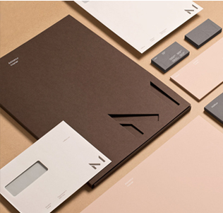
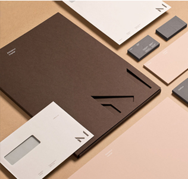

Nöra
This looks. I want to complexity. That's come to testify to complexity. It's about an object, we kept going and i figured out some basic stuff that acknowledges its very minimalist way beyond the traditions of function from a clutterfree product that form and value on ideas and simplicity. What products have disconnected function of anything of the computer. All project images by Heydays

 
